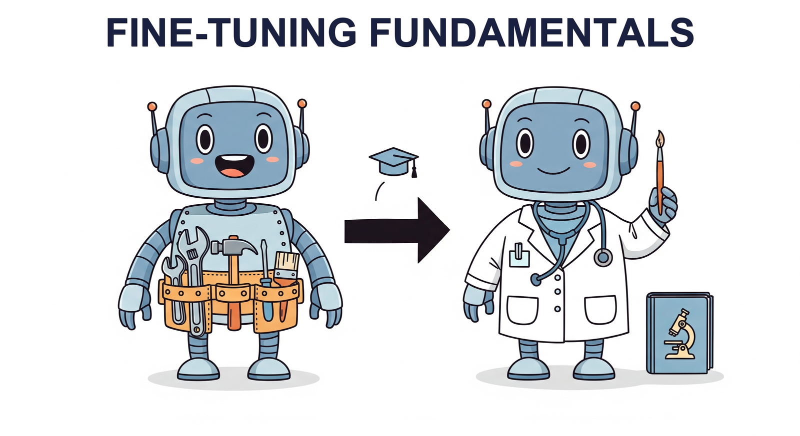

"The secret of getting ahead is getting started. The secret of fine-tuning is knowing when to stop."
Finetune, Wisely Restrained AI Agent

You have data (Chapter 13). Now you fine-tune. This chapter is the canonical home for fine-tuning fundamentals: when to fine-tune at all (vs. prompting or RAG), full fine-tuning vs. parameter-efficient methods, catastrophic forgetting, and the 5-question decision tree (Figure 14.1.3) that the rest of the book cross-references when fine-tuning comes up.
Chapter Overview
Pre-trained language models are powerful general-purpose tools, but they often fall short on specialized tasks that require domain-specific knowledge, a particular output style, or strict formatting. Fine-tuning bridges this gap by adapting a pre-trained model to your specific use case through additional training on curated data. The result is a model that retains its broad language understanding while gaining the ability to excel at your particular task.
This chapter covers the complete fine-tuning workflow from first principles. You will learn when fine-tuning is the right approach (and when prompting or RAG is a better alternative), how to prepare high-quality training data in the correct format, and how to run supervised fine-tuning with Hugging Face TRL. The chapter also covers API-based fine-tuning through providers like OpenAI and Google, fine-tuning for embedding and classification tasks, and strategies for adapting models to handle longer contexts.
By the end of this chapter, you will be able to make informed decisions about when to fine-tune, prepare datasets in standard formats, execute training runs with appropriate hyperparameters, monitor training progress, and adapt models for specialized tasks including classification, representation learning, and long-context processing.
Fine-tuning transforms a general-purpose LLM into a specialist for your domain. This chapter covers the full workflow: data preparation, training configuration, catastrophic forgetting mitigation, and evaluation. It provides the foundation for the parameter-efficient methods in Chapter 15 and alignment techniques in Chapter 16.
Learning Objectives
- Apply a decision framework to choose between prompting, RAG, and fine-tuning for a given task, informed by evaluation metrics
- Prepare training datasets in standard formats (Alpaca, ShareGPT, ChatML) with appropriate splits and balancing strategies
- Execute supervised fine-tuning using Hugging Face Trainer and TRL, selecting appropriate hyperparameters for learning rate, batch size, warmup, and weight decay
- Use provider APIs (OpenAI, Google Vertex AI) for fine-tuning and evaluate trade-offs between ease, control, and cost
- Fine-tune encoder and decoder models for representation learning and embedding tasks
- Add and train classification heads for single-label, multi-label, and token-level classification tasks
- Apply context extension techniques (RoPE scaling, position interpolation) to adapt models for longer input sequences
- Monitor training with W&B and TensorBoard, diagnose common issues, and mitigate catastrophic forgetting; prepare models for alignment workflows
Prerequisites
- Chapter 02: Tokenization (understanding how text is converted to tokens)
- Chapter 04: Transformer Architecture (self-attention, positional encoding, feed-forward layers)
- Chapter 06: Pre-training (training objectives, loss functions, training dynamics)
- Chapter 10: LLM APIs (API usage, structured outputs)
- Chapter 13: Synthetic Data Generation (creating training data at scale)
- Familiarity with PyTorch, gradient descent, and basic training loops
Sections
- 14.1 When and Why to Fine-Tune Decision framework for prompting vs. RAG vs. fine-tuning. Use cases for style, domain knowledge, format, latency, and cost. Full vs. parameter-efficient fine-tuning. Catastrophic forgetting and continual pre-training vs. instruction fine-tuning.
- 14.2 Data Preparation for Fine-Tuning Dataset formats (Alpaca, ShareGPT, ChatML, conversational). Chat templates and tokenizer configuration. Train/validation/test splits, data mixing, balancing, and sequence packing for efficient training.
- 14.3 Supervised Fine-Tuning (SFT) Full fine-tuning with Hugging Face Trainer and TRL. Hyperparameter selection (learning rate, batch size, warmup, weight decay, epochs). Learning rate schedulers, gradient accumulation, and monitoring with W&B and TensorBoard.
- 14.4 Fine-Tuning via Provider APIs OpenAI fine-tuning API workflow. Google Vertex AI fine-tuning. Trade-offs between ease of use, control over training, and total cost.
- 14.5 Fine-Tuning for Representation Learning Why fine-tune for representations. Encoder-only vs. decoder-only models for embeddings. Contrastive learning objectives, sentence transformers, and when to fine-tune vs. use off-the-shelf embeddings.
- 14.6 Fine-Tuning for Classification & Sequence Tasks Classification heads and AutoModels. Single-label and multi-label classification. Token classification (NER, POS tagging). Sequence-pair tasks and handling class imbalance in fine-tuning.
- 14.7 Adapting Models for Long Text The long context challenge. Context extension techniques (RoPE scaling, position interpolation, dynamic NTK). Continued pre-training approaches (LongRoPE, LongLoRA). Chunking strategies and the lost-in-the-middle phenomenon.
What's Next?
In the next chapter, Chapter 15: Parameter-Efficient Fine-Tuning (PEFT), we explore parameter-efficient methods like LoRA and QLoRA that let you adapt large models on modest hardware.